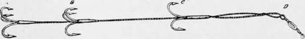

The Lake Trout. Part 3
Description
This section is from the book "American Game Fishes", by W. A. Perry. Also available from Amazon: American Game Fishes: Their Habits, Habitat, and Peculiarities; How, When, and Where to Angle for Them.
The Lake Trout. Part 3
"There is not such a vast difference between the play on the hook of the Lake Trout and the Speckled Trout. The latter at the time of taking a fly will jump above the surface of the water, which the former will not do in taking a bait, or subsequently, and the Speckled Trout swims near the surface when hooked, while the Lake Trout bores downward, but there is not sufficient difference in their tactics when hooked to cause the Fontinalis to stand with the elect, and the Namaycush to herd with the goats.
"Lake Trout fishing is becoming more and more each year a favorite mode of angling, particularly for the invalid, the indolent, and those whose heads are whitened with the frost of many winters. The latter, seated in an arm-chair in the stern of a broad, safe boat, can be rowed over the trolling ground and all fatigue avoided, except that bravely encountered by the boatman for three dollars per day. Often the tug of a 'laker,' (out of courtesy we call it a 'strike') arouses the veteran in his easy-chair from a dream of wading mountain brooks-before his joints became so stiffened, and his steps so feeble-and casting his fly for a smaller and more beautiful fish. Good anglers may dread a worse fate than becoming confirmed 'boat fishermen' for Lake Trout."
Personally, I must say that I had a leetle rather fish for Bass or Trout, but I would respond just as readily to a well-backed invitation to go again to " Kitchi-gummi" after lakers, as I would to one that took me among the black flies 'and "no-see-'ems," and mosquitoes, and underbrush, that are the well-nigh inseparable attendants of the Speckled-sides and Bronze-backers. Namaycush is a good, sturdy, persistent fighter. W nat if he does lack the vim and abandon of the others? What if, instead of going off in a hundred unexpected, bewildering dashes, he fights it out on one line, however long or short the summer. It is a question of degrees and kind of gameness only. Let the Tarpon fisher assert that there is but one game-fish in the world and that-his fish! We refuse to believe him; nor will we allow those who have not ' tasted the steadfast joys of Lake Trout fishing to underrate those qualities that make him dear to us.
The methods of taking the Lake Trout differ so materially, and are so much more varied in the smaller lakes, that for the purpose of this paper it will be necessary to give them somewhat in detail. Here, also, I am indebted very largely to the freely granted courtesy of Mr. A. N. Cheney, and to the results of Seth Green's labors. The latter used for deep-water trolling, which is decidedly the most sportsmanlike method, a gang of hooks, which he describes as follows:
seth green's gang.
"There are several methods of trolling for Salmon Trout, both with trolling-spoon and gang. Nearly all trollers of experience have their own peculiar ways of arranging their tackle, and handling, and while they all differ more or less in minor details, they are practically the same. I will describe the tackle with which I have met with the best success.
"The angler may use a hand-line or a rod, but the latter is the better, because its spring helps in playing the fish when struck. The rod line used is a hawser-laid Striped Bass linen line, size No. 9. These lines usually come in 600-feet lengths, but it is rare that more than 300 feet are used or required. Before using a new line, the stretch should be taken out of it as much as possible, else it is very difficult to strike a fish. In fishing, the line should be paid out slowly in order to prevent fouling, which the position of the sinker might otherwise cause. The leader, nine feet in length, is of single gut, one size finer than salmon gut. It is tied in two sections, with a swivel three feet from the lower end, and witb another swivel on the gang of hooks. A six-ounce sinker is tied on the end of the line, and the leader is fastened to the line four feet above the sinker. It is also advisable to place another swivel on the end of the leader, to be attached to the line, and this swivel should play on a round glass bead, which is kept in place by a knot on the under side. The object of the bead is, in case the sinker should strike a hill, and roll, it will do so without tangling the leader.
"The hooks are flatted O'shaughnessy's No. 8. These are the only hooks that I have found which will stand the strain. There are two sets of three each, and a single lip hook in a gang; and they are tied on, back to back, in the shape of a grapnel. For a minnow five inches long, the middle set of hooks is placed three inches from the upper hook, while the former in turn is two inches from the lower set. If the minnow is longer or shorter, the gang must be correspondingly proportioned, care being taken always to place the hooks in the same relative distances as above noted. The middle set is placed below the center of the gang, because Salmon Trout strike the bait well toward the tail. If, therefore, the minnow is not hooked below the middle, the Trout is quite likely to get away with the lower end of the bait. Before the minnow is placed on the hook, it is stunned by pinching its head. The upper or lip hook is then run through both jaws, fastening them together, while one of the lower hooks is inserted near the tail, and one of the middle set in the side. The minnow should have a slight curve when on the hooks, which will give it a rotary motion resembling a crippled minnow. It should not be curved so as to revolve rapidly. In fishing the lines should go down at an angle of about forty-five degrees. As the tackle described is fine, a fish must be played cautiously until its strength is exhausted. So long as the line is kept taut, the Trout is not likely to escape. In trolling in July, August and September, fish in from fifty to eighty feet of water, and keep the bait within a foot of the bottom. The angler can make sure of this, only by allowing the sinker to touch the bottom occasionally. In the months above named, the Trout bite very early in the morning, and in the evening. During May and June Salmon Trout are found near the surface, and no sinker is then required on the line."
Continue to: